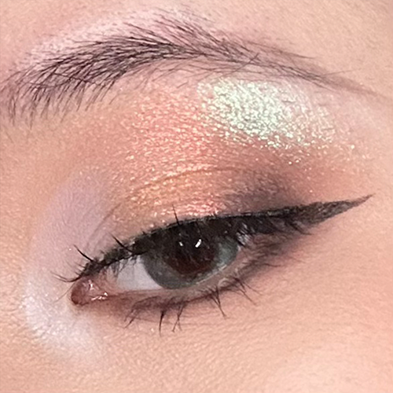
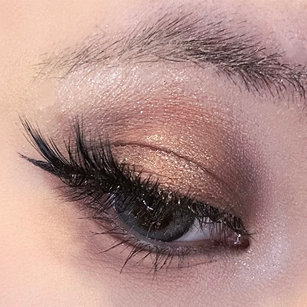
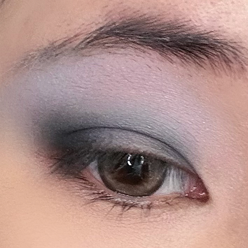
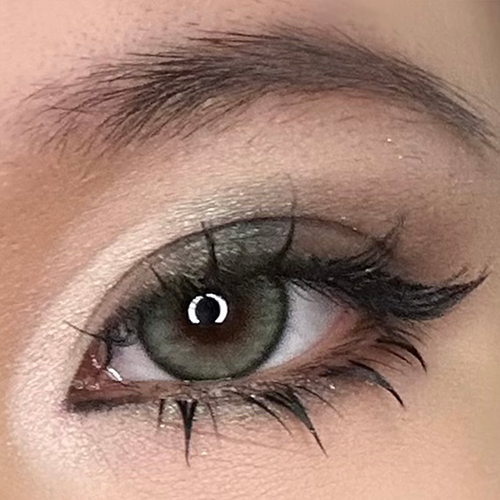
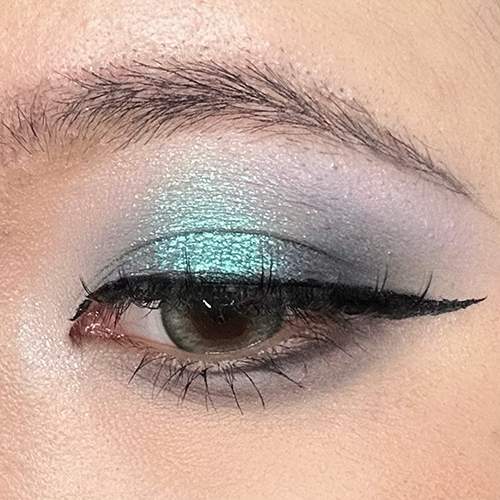
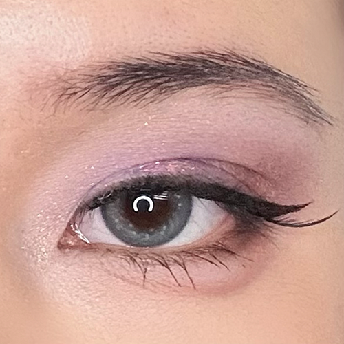

I am skilled and passionate about makeup, though I only wear it on weekends when going out with friends. Some have asked if I wear makeup because I lack confidence, but that’s not the case—I know I’m not bad-looking! The truth is, I simply want to present my best self to my friends and leave them with memories of me at my most beautiful. Putting on makeup is also a relaxing process for me: my eyes become a canvas for creative expression. I love using beautiful colors to make my eyes stand out. Unfortunately, I’ve always wanted to attend a professional makeup school but never had the chance.

Palette: Natasha Metropolis and Sheeneffect

Palette: Natasha Glam and PAT mothership VII

Palette: Adept emo

Palette: Pat mothership II

Palette: Sugarock replica forbidden

Palette: Natasha roxa and Terramoons Aurora Australis